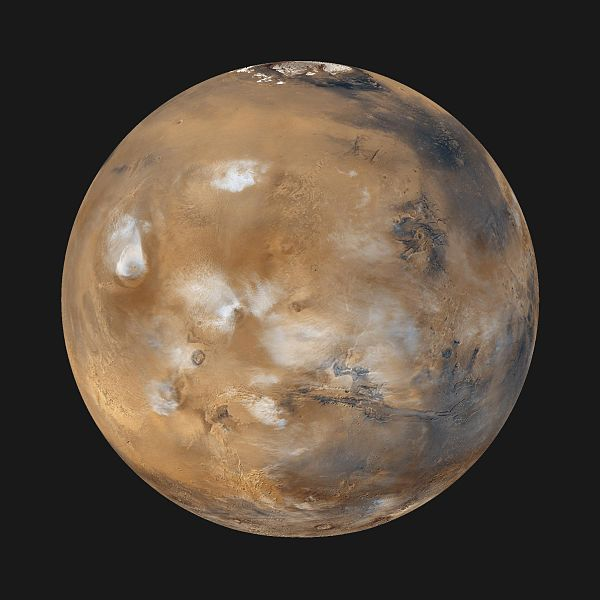

Your Home

Daten
- Name: Mars
- Mittlere Orbitalgeschwindigkeit 24,13 km/s
- Äquator- – Poldurchmesser* 6.792,4 – 6.752,4 km
- Masse 6,419 · 10^23 kg
- Rotationsperiode 24 h 37 min 22 s
- Druck* 6 · 10−3 bar
-
Temperatur*
- Min: 140 K (–133 °C)
- Mittel: 218 K (−55 °C)
- Max: 300 K (+27 °C)
- Hauptbestandteile
- Kohlenstoffdioxid: 95,32 %
- Stickstoff: 2,7 %
- Argon: 1,6 %
- Sauerstoff: 0,13 %
- Kohlenstoffmonoxid: 0,08 %
- Wasser: 0,02 %
Ausbau
- Bauzentrum
- Planetenverteidigung Lvl. 2
- Forschungslabore Anzahl: 12
- Kasernen Anzahl: 3